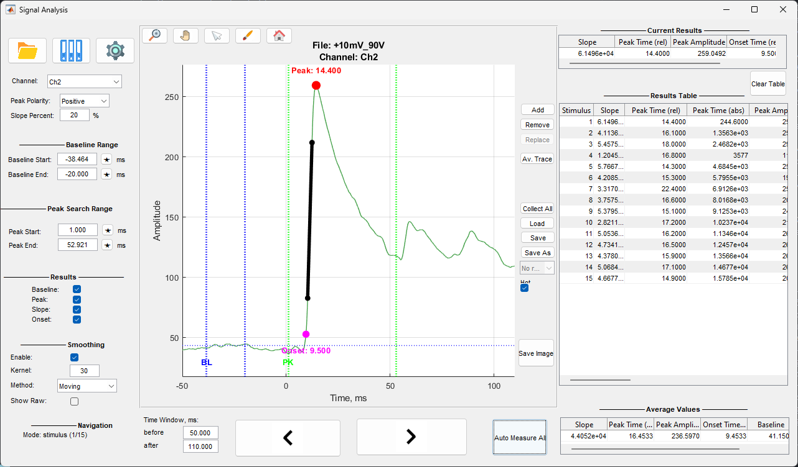

Окно анализа предназначено для измерения параметров сигнала относительно стимулов или событий.

Окно состоит из следующих элементов:
Кнопка Open File открывает диалог выбора ZAV файла. После загрузки файла отображается сигнал выбранного канала.
Кнопка Load Events открывает диалог выбора EV файла. Загружаются LFP данные для событий и сами события.
Кнопка File Manager открывает файловый менеджер для работы с проектами и группами файлов.
Выпадающий список Channel позволяет выбрать канал для анализа. При изменении канала график обновляется автоматически.
Выпадающий список Polarity определяет направление поиска пика:

Поле Slope Percent задает процент от амплитуды пика, используемый для расчета slope. Значение от 0 до 100.
Поля Baseline Start и Baseline End определяют временной диапазон для расчета базовой линии. Значения задаются в выбранных единицах времени относительно текущей точки отсчета.
Кнопка ★ рядом с полем позволяет выбрать точку на графике кликом мыши.

Поля Peak Start и Peak End определяют временной диапазон для поиска пика. Значения задаются в выбранных единицах времени относительно текущей точки отсчета.
Кнопка ★ рядом с полем позволяет выбрать точку на графике кликом мыши.

Поля before и after определяют размер временного окна отображаемого вокруг текущей точки. Значения задаются в выбранных единицах времени.

Чекбоксы в разделе Results управляют видимостью элементов на графике:

Таблица показывает результаты для текущего измерения:

Чекбокс Enable включает или выключает сглаживание сигнала перед расчетом измерений.

Статусная строка Mode показывает текущий режим навигации:
Режим определяется автоматически на основе загруженных данных.

Кнопки ◀ Previous и Next ▶ перемещают отображаемый интервал на один шаг назад или вперед в зависимости от режима навигации.
Кнопка Auto Measure All автоматически измеряет параметры для всех стимулов/событий/свипов и добавляет результаты в таблицу.
Кнопка Add добавляет текущее измерение в таблицу результатов. Результат включает все параметры из таблицы текущих результатов и метаданные.
Выберите строку в таблице результатов и нажмите кнопку Remove для удаления результата.
Выберите строку в таблице результатов и нажмите кнопку Replace для замены результата текущим измерением.
Кнопка Clear Table удаляет все результаты из таблицы.
Таблица содержит следующие колонки:

Таблица показывает средние значения по всем измерениям в таблице результатов:

Кнопка Av. Trace переключает режим отображения среднего сигнала по всем измерениям в таблице результатов. В этом режиме график показывает усредненный сигнал, а измерения выполняются относительно этого среднего сигнала.
Кнопка Save сохраняет результаты в Excel файл. Если файл был загружен ранее, результаты сохраняются в тот же файл. Иначе открывается диалог выбора пути сохранения.
Кнопка Save As всегда открывает диалог выбора пути для сохранения результатов в новый файл.
Чекбокс Hot Resave включает автоматическое пересохранение результатов при каждом добавлении или изменении результата. Работает только если файл был загружен ранее.

Кнопка Load открывает диалог выбора Excel файла с результатами. Загруженные результаты добавляются в таблицу результатов.
Выпадающий список Results показывает результаты из базы данных File Manager для текущего файла. Выбор результата загружает его в таблицу.
Кнопка Collect All собирает метаданные из всех результатов в таблице и сохраняет их в структурированном виде.
Кнопка Zoom активирует режим зума. Позволяет выделить область для увеличения.
Кнопка Pan активирует режим панорамирования. Позволяет перемещать график мышью.
Кнопка Cursor активирует курсор данных. Показывает координаты точки при клике на графике.
Кнопка Brush активирует режим выделения данных на графике.
Кнопка Home сбрасывает все инструменты и восстанавливает исходный вид графика.

Кнопка Save Image сохраняет текущий график в файл изображения (PNG, FIG и др.).
Кнопка Settings открывает окно настройки удаления артефактов (аналогично Signal Viewer).